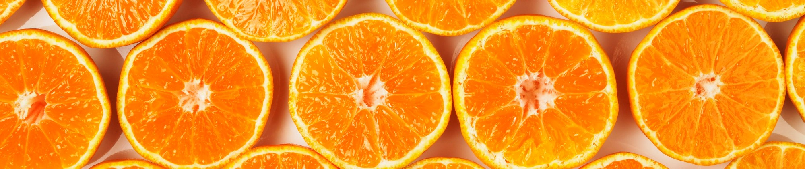
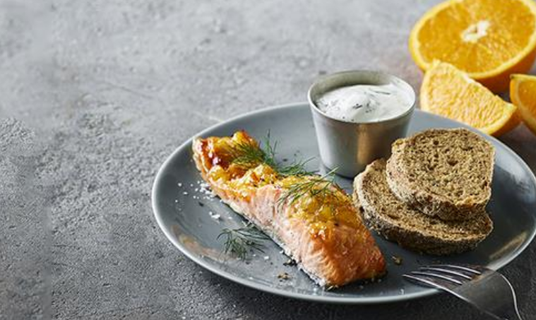
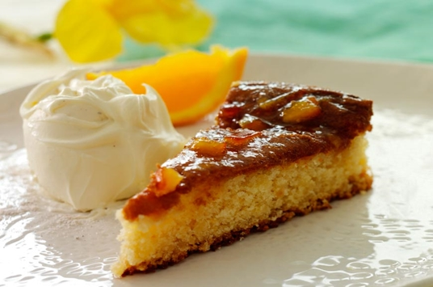

Så se med her..
Vi vil vise dig forskelige serveringsforslag til brug af appelsinmarmelade, så det kan blive en fast del af din hverdag - og du vil komme til at elske det..

PRØV DETTE!
GIN&TONIC ORANGE
5 cl Four Pillars rare dry gin 41.8%
10 cl Gents Tonic
Sød (ikke bitter) Appelsinmarmelade
Appelsinskal
Ovnbagt laks med appelsinmarmelade

1,250 kg fersk laksefilet eller
10 stk. lakseportioner à 125 g
125 g Skælskør appelsinmarmelade
Frisk eller tørret dild
Salt og peber
Evt. creme fraiche rørt med dild, salt og peber
Mazarin kage med appelsin og marcipan

5 æg
200 g sukker
150 g appelsinmarmelade
200 g revet Original ODENSE Marcipan
100 g hvedemel
1 tsk. bagepulver
100 g smør
Appelsinsirup
150 g appelsinmarmelade
½ dl hvid portvin
Brug en god appelsinmarmelade, vi forslår appelsinmarmeladen fra gestus..
Gestus er en serie af velsmagende madvarer – altid af en god kvalitet og passer ind i et hverdagsbudget. Hos Gestus brænder vi nemlig for at give danskerne mest muligt for pengene, både når vi taler kvalitet, pris og smagsoplevelser.
Og fordi vores sortiment tager udgangspunkt i din hverdag, inviterer vi danskerne til at være med i vores mange bruger- og produkttests – og derfor bliver meget af det, vi tilbyder, reelt udvalgt af danskerne selv.